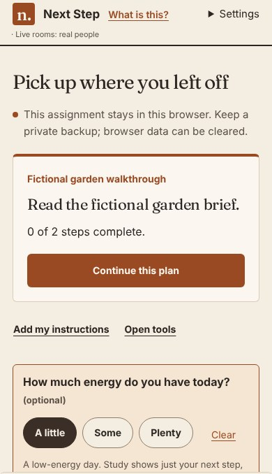

The loop
From neurons to next steps
It started at Pragnya, where one child was dancing while another covered their ears in the same room. Is that the brain’s state? Five short screens follow that question from real life, into the lab, and back out again.
What we found, in three sentences: In mice, brain cells reacted differently to the very same picture depending on how alert the mouse was. A brain-wave headset on a person could not reliably tell even whether their eyes were open or closed. So a helpful app should not try to read your brain: it should ask how you feel and show one small step at a time.
Get it as an Android app · or add this page to your home screen
Chapter 1 of 5 · Real life
Same words, different moment.
A step that is easy when someone is calm can be lost when they are tired, rushed or overloaded. Is that the brain itself? To find out, look inside a brain while its state changes.
Chapter 2 of 5 · Understand
How alert a mouse is changes how its brain responds to what it sees.
Mice watched pictures while thousands of brain cells were recorded. Guesser A saw only the picture. Guesser B also knew how alert and active the mouse was.
Found: knowing the mouse’s state made guesses 25–33% better, in all three mice.
25–33%better guesses once state is known
3 of 3mice show the gain
Chapter 3 of 5 · Measure
Can a brain-wave headset tell when a person’s eyes are closed?
A cap of 14 sensors on one person’s head for two minutes (EEG). Can a simple model tell when their eyes are closed?
Found: it worked on one stretch, then fell to no better than a coin flip. A smarter method using brain-wave rhythms helped, but was still not reliable.
0.625on one stretch (0.5 is a coin flip)
0.478across the recording: guessing
0.566with brain-wave rhythms: better, still unreliable
2 of 5stretches still below a coin flip
Chapter 4 of 5 · Design
From findings to features.
Alertness matters, but a headset cannot reliably measure it. So the apps ask, not guess. They show less on a low-energy day, and make pausing and coming back easy.

Built into: Next Step, by Amishi Mehta, for schoolwork, and Helper Jobs, a family project that gives neurodivergent adults one picture step at a time while they help at Pragnya’s Sunday outings for kids.
Chapter 5 of 5 · Test, then go further
Where this goes next.
One follow-up experiment is done. Next: three more experiments on the same public data, testing the apps with Pragnya volunteers and families, and write-ups others can check. Everything here is a plan, and labelled that way.
The aim: a research path that uses brain science to design apps that work for real people.